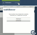
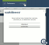

Displays reblogged posts with quote sections (text added by previous tumblrs) take up a lot of room.
Reblog Quote Fit reduces the display space taken up by the quoted text in order to enhance readbility.


Add bookmarks to posts on your dashboard so you can go back to them later!
Bookmarker adds a small bookmark button to posts, and a list of current bookmarks in your sidebar.
- Hold down the
 key when clicking on a bookmark icon to create a new bookmark with a custom name.
key when clicking on a bookmark icon to create a new bookmark with a custom name. - Hold down the key when clicking on an existing bookmark to rename it.

Dash Links to Tabs forces all links in dashboard posts to open in a new tab. That way, you won't lose your place when you are scrolling in the dash.
All links outside of posts, including the navigation sidebar and dashboard page navigation, behave as normal.
At work? Have kids about? Safe Dash will hide images in tumblr posts in case any of them are unsafe! Simply hover your mouse over the picture to reveal it. Turn Safe Dash on and off with a link in your dashboard sidebar! Turning Safe Dash off on this settings page will disable it completely.
Note: Safe Dash is not effective for posts on a user's tumblr page, only on dashboard-like pages (ie. dashboard, tumblelog, likes, queue and drafts).
These images are hidden:
- All image posts
- All photoset thumbnails
- Photosets that have been clicked (enlarged)
- Inline images in other types of posts
- Album art in audio posts
- All video thumbnails
- All full-size videos (except videos from external sites)
These images are NOT hidden:
- All tumblr-generated user avatars
- Externally-loaded videos (YouTube, Vimeo, etc)


Timestamps will add the date and time of a post on your dashboard.
Note: when Tumblr is suffering from errors, Timestamps will retry a number of times before failing to add the date and time to the post.
If you are on a tumblr post page and you want to jump directly to it on your dashboard so you can reply to it (assuming that the tumblr user's setup allows you to), Goto Dash Post is your best bet.
A "goto dash" control button is added to individual post pages for you to use.


A few convenient interface tweaks for new Tumblr posts.
- Always enable photo replies (where possible)
- Allow switching back to uploading images on photo posts
- By default, Tumblr allows you to switch to a URL with a "Use a URL instead" option, this will allow you to switch back with a "Upload images instead" option.
- Allow inline image uploading for all post types (not just text posts)
- Adds an "+ Upload Photo" option to all posting pages
- Much like the built-in "+ Upload Photo" options, these don't always load when Tumblr is suffering from errors.
Add reblogging functionality to your own tumblr posts, allowing you to Reblog Yourself.
Note: chat and ask posts are not normally rebloggable. Reblog Yourself will allow you to reblog them, but the formatting may look pretty bad.
Find out who you follow on Tumblr that doesn't follow you back and who follows you that you don't follow back with Follow Checker.
Limitations:
- When Tumblr is suffering from errors, Follow Checker may not be able to load all of your follower/followee pages and will return an error. Wait a little while and try again.
- Because of some limitations with the way Tumblr presents your follower/following lists, some people may appear to not be following/followed who actually are. You should always double-check!
Automatically create posts showing your Tumblr crushes, straight from your following page with Post Crushes.


With Reply Replies, when you click on the icon of a notification in your dash, it'll open a new text post with that notification (and quoted reply, for post replies) in it, ready for you to comment on and post.
To use this feature, you must have "Show notifications" turned on in your Tumblr preferences.
If you want to reply to multiple notifications in the same post, you can:
- Hold down the Shift key and click on the notification icons of each of the notifications you want to reply to.
- Click (without Shift) on the notification icon of the last notification you want to include.
- All the notifications will appear in a single post in chronological order!
A tag can be automatically added to your post for each user to whom you are replying!


Find out who has unfollowed you on Tumblr (since the last time you checked) with Unfollower.
Limitations:
- Unfollower can only track one tumblr account at a time.
- Unfollower is unable to differentiate between unfollows, deleted accounts and username changes.
- Unfollower compares the followers had either at the first time you installed or the last time you checked your unfollowers. If someone has followed you and then unfollowed you since the last time you checked, they won't show up.
- When Tumblr is suffering from errors, Unfollower may not be able to load all of your follower pages and will return an error. Wait a little while and try again.
- Because of some limitations with the way Tumblr presents your followers list, some people may appear to have unfollowed who actually haven't. You should always double-check.
 
